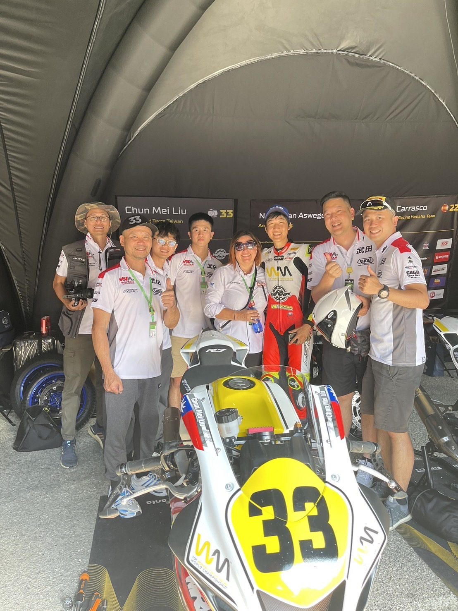
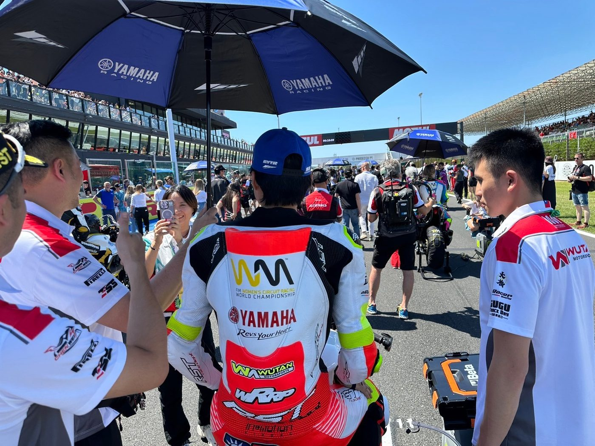

01我的故事
大家好，我叫劉君眉，台灣女生冠軍選手挑戰世界摩托車錦標賽，這是臺灣賽車運動第一次前進世界級賽事．
來自單親家庭的小眉在高中時期就到機車行半工半讀，而工作的車行假日會去參加機車比賽，
第一次接觸摩托車比賽的小眉就像是拿到了另一扇門的鑰匙，讓她下定決心要當一個賽車手。
但當時的臺灣賽車運動沒有獨立女子組別，小眉必須和男孩子一起同場比賽，
教練告訴她：「妳必須長時間鍛鍊身體，磨練心智，因為一剛開始不可能會贏男生」。
時間回到今日，小眉已馳騁沙場數十載，但她始終沒忘記這句話，縱使冬天的臺北總是下雨，
寒流一來體感溫度只剩下10度，她仍然堅持每天6點床，因為她必須完成兩個小時的體能訓練，再趕
回車行打卡上班，這是小眉的日常。

